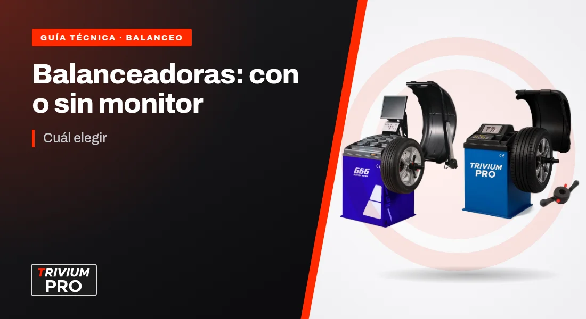

En el mundo del mantenimiento automotriz, contar con una balanceadora de ruedas eficiente marca la diferencia en la calidad del servicio. Actualmente, existen dos tipos principales de balanceadoras en el mercado: las que incluyen un monitor y las que no. A continuación, analizamos sus diferencias y cómo impactan en la operación de un taller o gomería.
Balanceadoras Sin Monitor: La Opción Económica
Las balanceadoras sin monitor son una alternativa más accesible, ideal para talleres que buscan una solución básica y funcional sin grandes inversiones tecnológicas. Sus principales características son:
- Requieren ingreso manual de los datos de la rueda (distancia, diámetro y ancho), lo que puede aumentar el tiempo de trabajo.
- Utilizan métodos tradicionales para indicar la ubicación de los contrapesos.
- Son una opción confiable para quienes realizan balanceos ocasionales o tienen menor volumen de trabajo.
Si bien su precio es más bajo, el proceso de balanceo puede ser más lento y depender más de la experiencia del operario.
Balanceadoras con Monitor: Precisión y Rapidez
Las balanceadoras con monitor incorporan tecnología avanzada para optimizar el proceso de balanceo. Son ideales para talleres con alto flujo de clientes que buscan rapidez y exactitud. Algunas de sus ventajas clave incluyen:
- Animación 3D e ingreso automático de datos: No es necesario ingresar manualmente la distancia, diámetro y ancho de la rueda, lo que reduce errores y acelera el trabajo.
- Freno de disco automático y puntero láser: Permiten posicionar los pesos con mayor precisión y rapidez, asegurando un balanceo perfecto.
- Iluminación LED para indicar la posición del peso: Facilita la tarea del operario, especialmente en entornos con poca luz.
- Mayor velocidad de operación: Reduce los tiempos de espera del cliente y mejora la productividad del taller.
Si bien su costo inicial es mayor, la eficiencia y rapidez que ofrecen pueden representar un retorno de inversión rápido en talleres con alta demanda.
¿Cuál Es la Mejor Opción para Tu Taller?
La elección entre una balanceadora con o sin monitor dependerá de las necesidades específicas del taller. Si el presupuesto es limitado y el volumen de trabajo es bajo, una balanceadora sin monitor puede ser suficiente. Sin embargo, si la prioridad es la eficiencia, la precisión y la rapidez, una balanceadora con monitor será la mejor inversión.
En definitiva, la tecnología aplicada en las balanceadoras con monitor permite optimizar tiempos y mejorar la experiencia del cliente, algo clave en un mercado cada vez más competitivo.